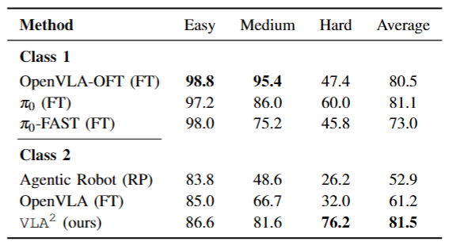

VLA² integrates these modules to enhance the ability of VLA: Task Planning, Web/Memory Retrieval, Object Grounding, and Result Verification. Each module implements its function through one or more foundation models.
The figures below illustrates the process of how VLA² handles a task that has an unseen concept (Put the blue and white porcelain bowl on the stove) in the observation.
Once information is retrieved at the beginning of a task, the processed information can be stored in memory for later use.
VLA² remains competitive with all methods using OpenVLA as their backbone (Class 2 baselines), and achieves top-tier performance on all benchmarks except for LIBERO-Object.
Based on the LIBERO simulation environment, we designed object generalization tasks across three difficulty levels, ranging from simple color variations (Easy) and manipulation of generalized target objects (Medium) to generalization to objects with unseen concepts (Hard).
As the benchmark difficulty increases, all baselines exhibit a significant decline in task success rates, while VLA² demonstrates a clear advantage on tasks that require strong generalization capabilities.